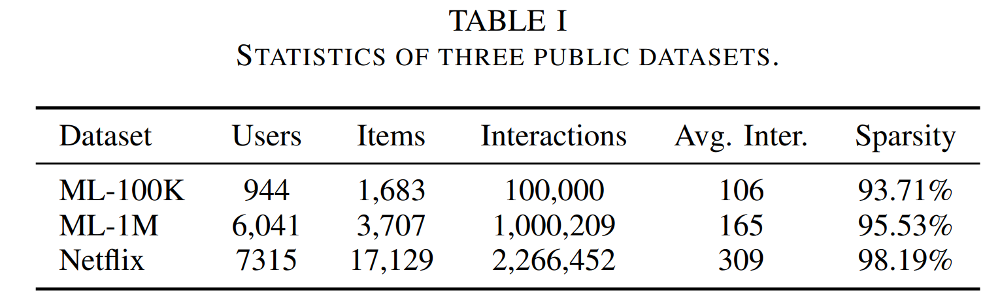
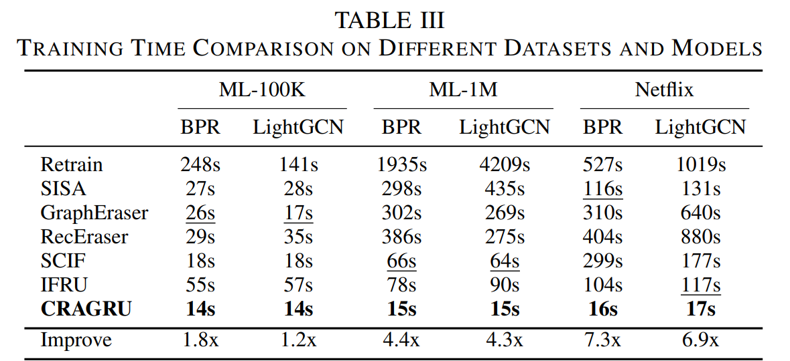
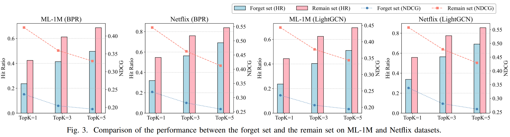
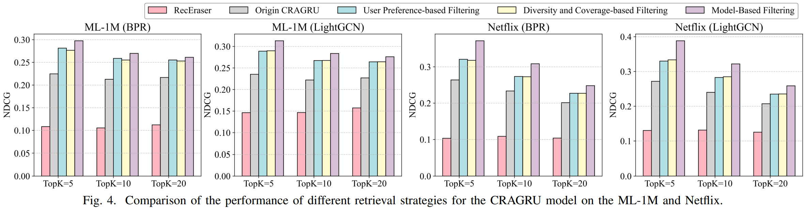

Experiments
Setup
Datasets: MovieLens-100K, MovieLens-1M, Netflix. Backbones: BPR and LightGCN. We remove 10% of interactions as a forget set and evaluate on the remaining data using HR@K and NDCG@K (K = 5, 10, 20).

Dataset statistics. Users, items, interactions, sparsity, and average interactions per user.
Utility (RQ1)
Across datasets/backbones, CRAGRU approaches retraining and surpasses unlearning baselines.
On ML-1M (LightGCN), it improves HR@10 by ~9.6% and NDCG@10 by ~12.3% over RecEraser.

Utility (Table II). CRAGRU delivers strong ranking quality while mitigating bias.
Efficiency (RQ2)
Unlearning runs at LLM inference time, avoiding retraining. CRAGRU is consistently the fastest, with multi-× speedups vs. SOTA baselines;
timing scales roughly linearly with request size, unlike partition-based methods.

Efficiency (Table III). Lowest unlearning time across datasets/backbones.
Unlearning Completeness (RQ3)
CRAGRU yields a clear performance gap between the forgotten and remaining sets, indicating effective removal of memorized patterns while protecting other users.

Completeness (Fig. 3). HR/NDCG drop on the forget set confirms thorough unlearning.
Retrieval Strategies (RQ4)
All three strategies improve over an unfiltered baseline; attention-aware achieves the largest gains across datasets/backbones.

Strategies (Fig. 4). Preference-based preserves long-term tastes; diversity-aware balances coverage; attention-aware ranks the most influential history.

{kind=link}